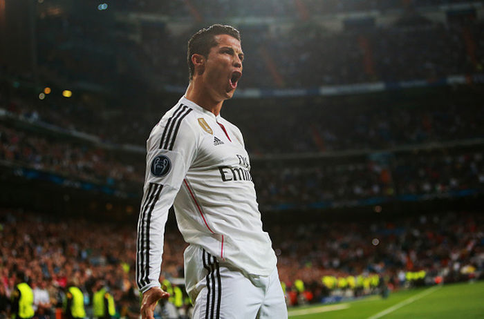

우리형 - Cristiano RONALDO
제가 좋아하는 축구선수 Cristiano RONALDO를 소개합니다. 유벤투스 FC (FW 공격수, 7) 이탈리아 축구 에이스 1985년 2월 5일, 포르투갈.
What more can you say about Cristiano Ronaldo? The complete player and one of the greatest footballers that the game has ever seen. Ronaldo simply has it all: pace, power, finishing, goalscoring, the list goes on, and all of these attributes have seen him become a multiple Ballon d’Or, Champions League, FIFA Club World Cup and domestic title winner. A lethal forward, Ronaldo can score goals in any situation whether it be from outside or inside the box, with his head or either foot, not to mention that his trickery allows him to set up team-mates with consummate ease. His exploits have seen the Portuguese striker become the all-time top scorer in UEFA Champions League history, in addition to becoming the all-time leading marksman for his country. Born in Funchal, Madeira, Portugal, Ronaldo played for the youth academies of Andorinha and Nacional before moving to Sporting CP, where he then graduated into the senior squad in the 2002/03 season. After making an instant impact in the capital, he caught the of eye of Sir Alex Ferguson at Manchester United, who promptly signed the young star and gave him his United debut in 2003. It was at Old Trafford where Ronaldo began to forge his reputation as a world-class player, raising three consecutive Premier League titles (2007, 2008, 2009) and the 2008 Champions League, in addition to his first Ballon d’Or the very same year.

Ronaldo’s stunning form for United earnt him a then world record transfer to Real Madrid in 2009, where he went on to break record after record and win trophy after trophy to truly establish himself as one of the greatest ever. His trophies won with Real include four Champions League titles (helping the side become the first team to win the cup three times in succession), two La Ligas and three FIFA Club World Cups. Furthermore, Ronaldo’s records at Real include becoming the club’s all-time leading marksman with 450 goals, the scorer of most hat-tricks in La Liga history (34) and the player to reach 300 La Liga goals in the fastest time (286 games). His exceptional form was also recognised globally by four Ballon d’Or wins coming in 2013, 2014, 2016 and 2017. At international level, Ronaldo captained his country to Euro 2016 glory in France and has scored in eight consecutive major international tournaments, starting from Euro 2004 to the 2018 World Cup. Upon signing for the Bianconeri in July 2018, Ronaldo is the first ever player to represent all three of the game’s most prestigious football clubs: Manchester United, Real Madrid and Juventus.